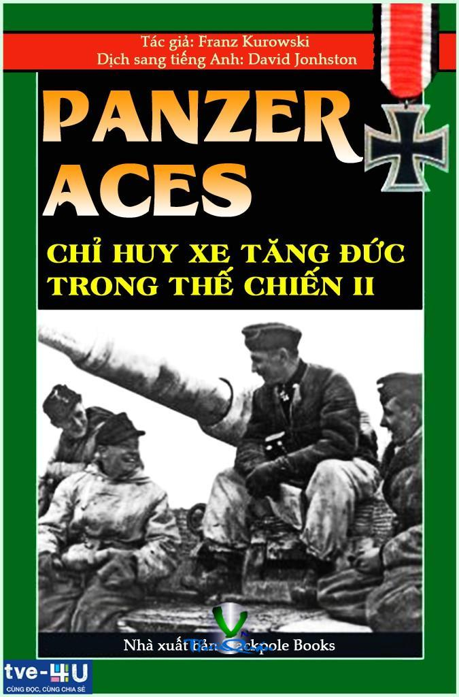

« Back
Panzer Aces Chỉ Huy Xe Tăng Đức Trong Thế Chiến Ii
By Franz Kurowski

Chương 1. FRANZ BAKE VỚI SƯ ĐOÀN 6 XE TĂNG Ở MẶT TRẬN ĐÔNG VÀ TÂY
Chiến Dịch Pháp (Phần 2)
Chiến Dịch Nga – Tái Tổ Chức Và Trang Bị
Chuyển Về Đức Và Khôi Phục
Cuộc Hành Quân “Bão Mùa Đông”
Trận Đánh Ở Morosowskaja
Operation Citadel
Máy Bay Đức Tấn Công Sư Đoàn 6 Xe Tăng
Trung Đoàn Xe Tăng Hạng Nặng Bake Trong Chiến Đấu
Cuộc Tấn Công Của Quân Soviet Phía Đông Nam Vinnitsa
Kết Thúc Chiến Tranh
Chương 2. HERMANN BIX MỘT MÌNH CHỐNG MỘT TIỂU ĐOÀN ĐỊCH
Sự Xuất Hiện Lần Đầu Tiên Của T-34
Trận Đấu Tăng Ở Venew
Năm Lần Bị Mìn
Trận Đánh Thiết Giáp Gần Warsaw
Tiêu Diệt Mười Sáu Xe Tăng
Huân Chương Hiệp Sĩ Cho Trung Sĩ Nhất Bix
Những Ngày Quan Trọng Trong Cuộc Đời Hermann Bix
Chương 3. Rudolf Von Ribbentrop
Hành Về Hướng Đông
Cuộc Tấn Công Bắt Đầu
Với Đại Đội 7 Trong Trận Tấn Công Kharkov
Rudolf Von Ribbentrop
Trận Kursk – Von Ribbentrop Trong Các Trận Đánh
Cuộc Tấn Công
Quân Đoàn II Xe Tăng SS Trong Trận Đánh
“Cải Tử Hoàn Sinh – Gần Prokhorovka”
Đường Đi Của 1 Quân Nhân
Từ Junkerschule Đến Vùng Cực Bắc
Đến Nước Pháp – Lại Bị Thương
Cuộc Đổ Bộ – Hoạt Động Phòng Thủ Của Sư Đoàn Hitlerjugend Trong Trận Tấn Công
Chiến Dịch Ardennes Và Sự Cáo Chung Của Nước Áo
Tuần Cuối Cùng Của Cuộc Chiến – Hồi Chung Cuộc.
Lời Cuối Cùng Của Rudolf Von Ribbentrop
Sự Nghiệp Quân Sự
Hans Bölter
“Cọp” Tới Mặt Trận
Giai Đoạn 3 Của Trận Đánh
Huân Chương Chữ Thập Hiệp Sĩ Của Thiếu Úy Bölter
Lá Sồi Thưởng Cho Thiếu Úy Bölter
Hans Bölter
Sự Nghiệp Quân Sự
Michael Wittmann
Sự Nghiệp Quân Sự
Albert Ernst
Sự Nghiệp Quân Sự